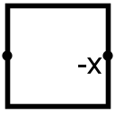

取反器
| 库： | 算术 |
| 引入版本： | 2.0 Beta 22 |
| 外观： |
 |
行为
计算输入的二进制补码取反。该取反操作通过保留最低位1及其以下的所有低位，并对高于该位的所有位取反来完成。
如果要取反的值恰好是最小负值，则其取反结果（无法用二进制补码形式表示）仍为最小负值。
引脚
- 西侧边（输入，位宽与数据位宽属性匹配）
- 要取反的值。
- 东侧边，标有 -x（输出，位宽与数据位宽属性匹配）
- 输入的取反结果。但如果输入恰好是dataBits位所能表示的最小负值，则输出与输入相同。
属性
当组件被选中或正在添加时，Alt-0至Alt-9可更改其数据位宽属性。
- 数据位宽
- 组件输入和输出的位宽。
手形工具行为
无。
文本工具行为
无。
返回 库参考